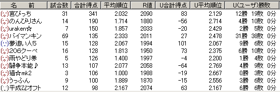
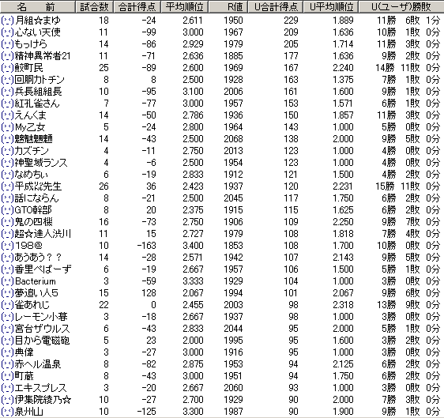
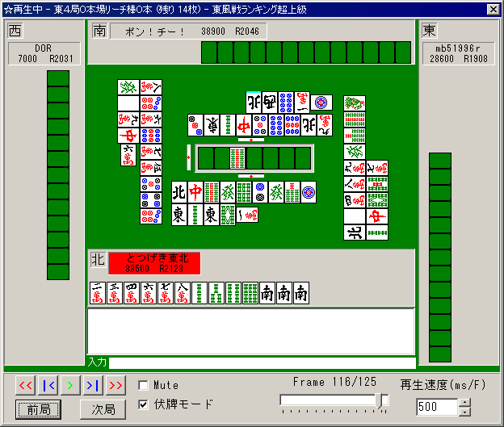

超ランあれこれ
12/11 ひさびさに雀友使ってみた
01/07/01以降の第一超ランでの集計。
ただし、おれのＨＮはとつげき東北とは限りませんよ？（笑）
注意：以下は、雀士の実力について何か意味を与える表ではありません。
麻雀の結果は偶然性によって非常にばらつきます。
たった50試合程度の勝敗では、強い人が弱い人に負けることなどいくらでも起こります。
同じ実力であっても、片方が運のみで10連勝ということも充分に起き得ます。
したがって、以下の表から実力をうんぬん語ることは全く無意味です。あくまでも遊びとして見ましょう。
おれと対戦して、当人が90ポイント以上浮いてる人(
´Д`)ｺﾛｽ

対戦して、おれが90ポイント以上浮いてる人(ﾉ´▽`)ﾉ10円あげる。

12/10 打つの（出るの）おせーよ
打つのが遅い人はすごく気になるな～。
リーチかかった直後とか、シビアな流局間際とか、ちょっとややこしい時ならわかるんだが、普通のメンゼン手で１打に３秒ずつもかけるなよ・・・
もし回線が遅いなら「重いです」の一言もあればいいんだがね。
おれはドヘタ差別主義者なので、Ｒ1800台とかで遅いやつにはもうあんなことやこんなことをしてしまう(´ｍ｀)
どうでもいいが、１人が遅いと、他の人もつられて遅くならん？（笑）
「ボフッ ボフッ ボフッ ピーン カチッ ボフッ ボフッ ボフッ ピーン・・・」
のリズムがあるので、そのうち一つがゆっくりだとちょっとつられてしまうのか（笑）
この ピーン（自分に順番がまわってきた音）と、カチッ（マウスクリック）の間隔をいかに狭くするかを自分でやってるとなかなかおもろい（笑）
ピーカチッ（マウス音で前の音をキャンセルする） くらいが好ましい。
ただ、たまに失敗すんのよねー役牌かぶったのに切ってもうたり（笑）
そういや東風素早連盟（とんぷうすばやれんめい）の活動の一環として、「試合終了後即抜けの早さ」にはこだわってるわ(
≧∇≦)ﾌﾞﾊﾊﾊ!
ロンらしき牌がとまったら、即座に心の準備をする。
試合終了すると、下に「次へ」ボタンが出て、それを押すと「抜ける」ボタンがその左に出る。
ロンやツモの声を聞いたとたんに、「次へ」ボタンの位置をすばやく押し0.3秒以内に左にカーソルを動かしクリック！！！ﾊｧﾊｧ
前に、真剣に「とつさん、どうやってあんな早く抜けてるんですか？ そのためのツールとかあるんですか？」とか聞かれたわ（笑）
なんのことはない、気合いと正確なマウス押し技術のみ重要やわ( ≧∇≦)ﾌﾞﾊﾊﾊ!
しかしよく考えたらファンクションキー早押しの方が早く抜けれそうやな・・・今度ためしてみるか・・・
ちなみに、即抜け技術は、「超ランで人がいなくて、次の試合に乗り遅れて打てない」のを避けるために自然に身についた（笑）
12/09 うんちリーチ
超ランは上ランやワイ卓よりも、牌を選ぶ待ち時間が短いので、超ラン初心者は注意しましょう。
私ほどにもなれば大丈夫ですが。

トップがトップ確定だろうから5200はあるまいと思って、６ソウひっつきあたりでリーチをかける気でいた。
テンパイした！ さあリーチボタンを押して・・・
う！ まてよ？ ４位のリーチ、６ソウだとやばいかも。メンホンドラ系でひょっとして振ったらまくられるか！？
でもテンパイ崩すのも・・・うわああああ時間がああああリーチ（無情）。
おかあああさああああああん！！！！！（涙）
フリテン単騎６ソウ待ち追っかけになってしまいましたが、私の麻雀技術になにかご不満でも？ 最強水準だよ私は？（；；；；；；；´ｰ`）y-ﾟﾟﾟ
お、おれはヘボ打ちじゃねえええ ヘボ打ちじゃねえぇぇぇぇ・・・
ちなみにトイメンに振って、リーチドラドラで３位転落しました(
≧∇≦)ﾌﾞﾊﾊﾊ! まあこんだけ下手打ちやったら、それくらいの罰は喜んで受けますが（
´Д`）